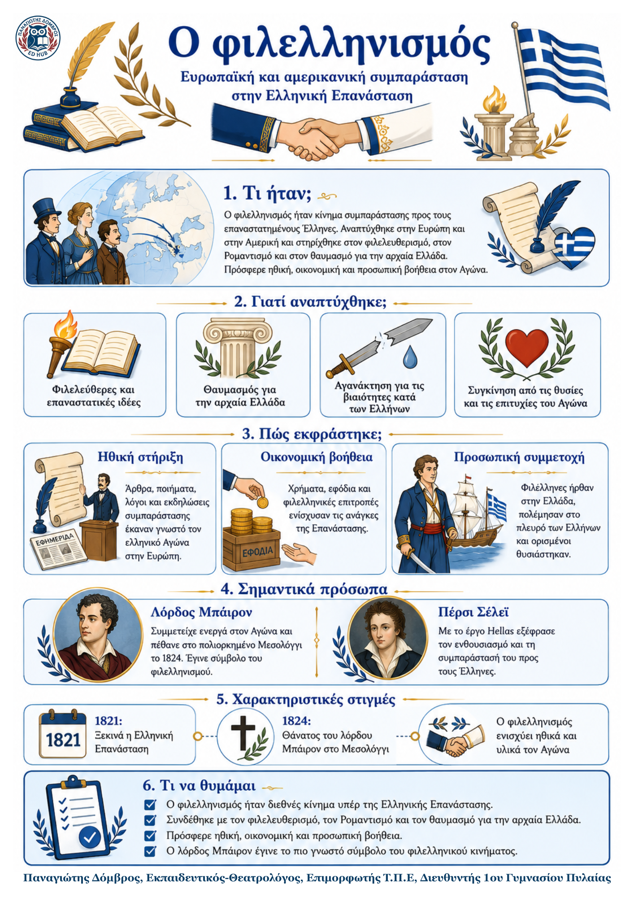

Δεν βρέθηκε η λέξη ή η φράση μέσα στην ενότητα.
1Η βασική ιδέα
Ο φιλελληνισμός ήταν κίνημα συμπαράστασης προς τους επαναστατημένους Έλληνες, που αναπτύχθηκε στην Ευρώπη και στην Αμερική. Συνδέθηκε με τον φιλελευθερισμό, τον πολιτικό Ρομαντισμό και τον θαυμασμό για τον αρχαίο ελληνικό πολιτισμό. Πρόσφερε ηθική, οικονομική και στρατιωτική βοήθεια στον Αγώνα.
2Γιατί αναπτύχθηκε;
• Οι φιλελεύθερες και επαναστατικές ιδέες της Γαλλικής Επανάστασης.
• Ο θαυμασμός των Ευρωπαίων για την αρχαία Ελλάδα και τον πολιτισμό της.
• Η αγανάκτηση για τις βιαιότητες εναντίον άμαχων Ελλήνων.
• Η συγκίνηση που προκάλεσαν οι επιτυχίες και οι θυσίες των επαναστατών.
3Πώς εκφράστηκε ο φιλελληνισμός;
| Μορφή βοήθειας | Παραδείγματα | Σημασία |
|---|---|---|
| Ηθική | Άρθρα, ποιήματα, εκδηλώσεις συμπαράστασης | Έκανε γνωστό τον ελληνικό Αγώνα |
| Οικονομική | Χρήματα, εφόδια και επιτροπές ενίσχυσης | Στήριξε τις ανάγκες της Επανάστασης |
| Προσωπική | Εθελοντές πολέμησαν στο πλευρό των Ελλήνων | Ορισμένοι θυσιάστηκαν για την ελευθερία |
4Πρόσωπα και ιδέες
| Λόρδος Μπάιρον: πήρε προσωπικά μέρος στον Αγώνα και πέθανε στο Μεσολόγγι το 1824. | Πέρσι Μπις Σέλεϊ: με το έργο Hellas εξέφρασε τον θαυμασμό και τη συμπαράστασή του προς τους Έλληνες. |
|---|
5Τι πρέπει να θυμάμαι
| • Ο φιλελληνισμός ήταν διεθνές κίνημα στήριξης της Ελληνικής Επανάστασης. | • Βασίστηκε σε φιλελεύθερες ιδέες, στον Ρομαντισμό και στον θαυμασμό για την αρχαία Ελλάδα. |
|---|---|
| • Πρόσφερε ηθική, οικονομική και προσωπική βοήθεια στους Έλληνες. | • Ο λόρδος Μπάιρον έγινε το πιο γνωστό σύμβολο του φιλελληνικού κινήματος. |
